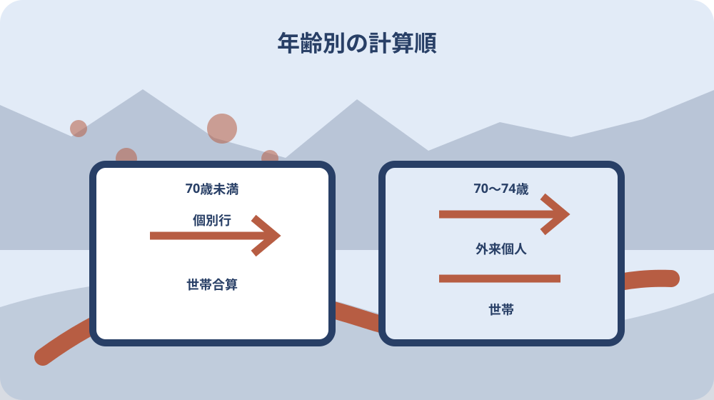
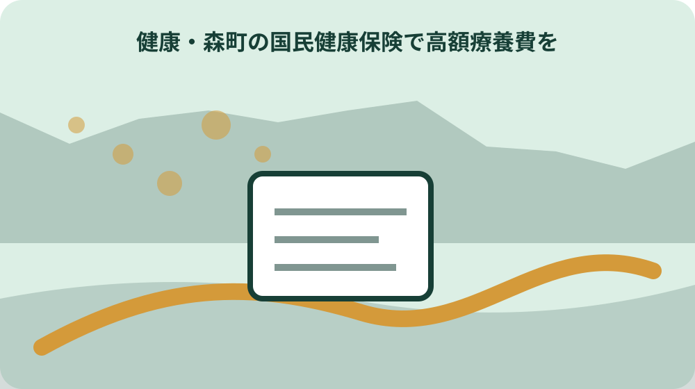

先に結論を確認する
この記事の答え：診療を暦月ごとに分け、受診者、医療機関・薬局、入院・外来、保険診療の自己負担、マイナ保険証等の利用を一行ずつ記録します。70歳未満と70歳以上75歳未満は計算順が異なるため、町へ確認する前に混ぜません。
森町で最初に照合する条件：受診日時点で森町国民健康保険へ加入していたかを資格情報で確認し、転入出・就職・退職・75歳到達がある月は行を分ける。
結論は暦月・人・医療機関・入外来を分けた受診台帳を作る
森町の国民健康保険で医療費が高くなったとき、最初に行うのは領収書の総額だけを見ることではありません。受診した暦月、受診した人、病院・診療所・薬局、入院か外来かを一行ずつ分け、高額療養費の計算単位を崩さない受診台帳を作ります。
台帳の左端に診療年月、続いて国保加入者名、医療機関名、入院・外来、保険診療の自己負担額、マイナ保険証の使用、町からの申請書到着日を置きます。食事代や差額ベッド代などを医療費の自己負担と一括せず、領収書の内訳を保ったまま転記します。
この記事の直接回答は、同じ世帯の領収書を月別に並べ、70歳未満と70歳以上75歳未満の計算順を分け、町から届く申請書と照合することです。所得区分や限度額を家族だけで決めず、受診月時点の加入状況と町の回答を確認欄へ残します。
これは給付額を断定する記事ではありません。森町公式と厚生労働省の一次情報を基に、申請漏れや月またぎの取り違えを防ぎ、住民生活課国保年金係へ具体的に尋ねられる記録を完成させる実務ガイドです。
完成形は、家族全員分を一枚へ押し込む集計表ではなく、根拠となる領収書へ戻れる索引です。各行に原本番号を付け、町の回答で直した箇所は上書きせず訂正日を追記します。これにより翌月の受診分や別制度の資料が紛れ込んでも、対象診療月の状態を復元できます。森町へ相談する際は、表全体を渡す前に質問対象の行へ印を付け、本人確認書類や委任の要否を先に尋ねます。家族が代理する場合も当然に回答を受けられるとは決めず、本人との関係と必要書類を確認してから個人情報を提示します。
受診日ではなく一日から末日までの暦月で束ねる
高額療養費は一回の入院期間全体ではなく暦月単位で扱います。月末から翌月へ続いた入院は、退院時に一枚の予定表へ見えていても、台帳では前月と翌月の二行へ分けます。請求書の診療期間と領収日が違う場合も、支払日だけで月を決めません。
家族の領収書を入れる封筒も「八月受診分」「九月受診分」のように診療月で分けます。領収書の再発行が難しい場合に備え、原本を撮影した日、原本の保管場所、医療機関へ照会した日を別欄に残します。画像だけで申請できると自己判断はしません。
診療月の境界を正しく残すと、森町から申請書が届いた際に、どの受診分への案内かを照合できます。通知到着が診療から二、三か月後になっても、受診月の台帳があれば別の月の領収書を混ぜずに済みます。
月末の入院予定がある場合は、費用だけを理由に受診日を動かしません。治療日程は医療機関の判断を優先し、制度の計算方法は受診後の記録と町への確認に使います。
月ごとの袋には、医療機関が発行した領収書と診療明細書を組にし、クレジットカードの引落月や家計簿の記帳月は参考欄へ置きます。制度上の診療月、実際の支払日、家計上の出金月という三つの日付を分けると、月またぎの説明を町へ正確に伝えられます。
70歳未満は一人・一医療機関の行から世帯合算へ進む
70歳未満の記録は、家族全員の自己負担を最初から一つの金額へ足すのではなく、一人ごと、医療機関ごとに行を作るところから始めます。同じ病院でも入院と外来を分け、院外薬局は処方元との関係が分かるよう処方日と医療機関名を添えます。
森町公式には70歳未満の合算対象基準額と世帯合算の考え方が掲載されています。基準額以上かの判定を領収書の総額だけで済ませず、保険診療の自己負担部分を読み、対象外費用を分離した状態で国保年金係へ確認します。
台帳には「個別行」「合算候補」「町確認済み」の三段階を設けます。家族が合算できると思った行にも、受診月の保険者や世帯が同じかという確認欄を残し、転職や転入出をまたぐ月は加入履歴を添えます。
世帯主が会社の健康保険で家族だけが森町国保という場合、国保税の納税義務者と給付対象の被保険者を同一人物と決めつけません。通知の宛名、受診者、振込先の各欄を分けます。
医療機関の名称が法人名、病院名、分院名で異なるときは、領収書の表記をそのまま写したうえで、同じ施設か未確認かを注記します。家族が名称を短縮して統合すると計算単位を誤る可能性があるため、町へ尋ねるまでは別行を維持します。
70歳以上75歳未満は外来個人と世帯の二段階を残す
70歳以上75歳未満では、森町公式が外来の個人単位を先に計算し、その後に入院を含む世帯単位を適用する順序を示しています。台帳にも「外来個人A」「外来と入院の世帯B」という二つの小計欄を作ります。
同じ人の外来と入院を一度に足すだけでは二段階の経過が見えません。外来の小計、入院の自己負担、世帯小計を別々に記載し、どの所得区分が使われたかを資格確認書または資格情報のお知らせと照合します。
誕生月や75歳到達前後は加入制度が動く可能性があります。年齢だけで対象制度を決めず、受診日ごとの資格情報と町から届いた書類を並べ、後期高齢者医療へ移った日を境に行を分けます。
家族が代理で整理するときも、本人の所得区分や診療内容を必要以上に共有しません。制度確認に必要な欄だけを担当者へ見せ、医療情報の保管者と申請担当を分けられるようにします。
年齢区分の切替がある月には、生年月日だけでなく資格書類に記された適用開始日を確認します。二割・三割という窓口割合と高額療養費の所得区分も別の欄にし、同じ数字に見えても一つの判定だと思い込まないよう、根拠書類名を併記します。

マイナ保険証の窓口適用と後日の申請を別欄にする
森町は、マイナ保険証を利用すると高額療養費の限度額を超える窓口支払いが免除され、限度額適用認定証の事前申請が不要になると案内しています。ただし、窓口額が抑えられたことと、世帯合算など後日の確認が不要であることは同じではありません。
受診台帳には、マイナ保険証を使ったか、限度額情報の提供に同意したか、窓口で適用された区分、紙の認定証を示したかを記録します。読み取り不具合や資格情報の差があった場合は、医療機関の説明日と町への照会日を残します。
窓口で限度額までになった領収書も捨てません。別の医療機関や家族の自己負担と世帯合算になる可能性を確認できるよう、同じ暦月の束へ入れ、申請書到着時に照合します。
マイナ保険証を持たない場合や使えない場合の手続は、受診前に町へ確認します。この記事の記録表は認定証の要否を決めるものではなく、どの方法で限度額情報を確認したかを残すものです。
医療機関の窓口で限度額情報を確認できなかった場合は、いったん支払った額、理由として説明された内容、再確認先を残します。その場で制度対象外と結論づけず、資格情報の反映時期や機器の状態など事実を切り分けて、町と医療機関のどちらへ確認したかを記録します。
町から届く支給申請書を受診台帳へ照合する
森町は高額療養費の該当者へ支給申請書を郵送し、診療後早くて約二、三か月後と案内しています。台帳には診療月のほか、申請書の発送日、到着日、対象者名、対象診療月、提出日、町の受付確認日を置きます。
申請書がすぐ届かないことだけで対象外と判断しません。診療報酬の確認に時間がかかることを前提に、住所変更、世帯主変更、郵便転送の有無を確認し、想定時期を過ぎたら国保年金係へ受診月と氏名を伝えて照会します。
国民健康保険法施行規則が示す被保険者名、医療機関名、傷病名、療養期間、支払額に対応できるよう、領収書と申請書の行番号を結びます。傷病名を家族が推測で補わず、書類にない内容は未確認と記載します。
提出前には申請書左上の注意事項を読み、チェック欄、署名、口座情報、添付の要否を最新版で確認します。過去の家族の申請書をそのまま見本にせず、届いた原本を基準にします。
申請書の写しを保存する場合は、提出前と受付後を区別します。郵送なら投函日と追跡情報、窓口なら提出日と受付先を記録し、不足書類の連絡があれば、連絡日、追加した資料、再提出日を同じ案件番号へつなぎます。未提出の下書きを提出済みと誤認しません。
所得区分は受診月と世帯の申告状況から確認する
自己負担限度額は年齢と所得で変わります。現在の収入だけで区分を推測せず、対象となる受診月、世帯構成、町が把握している所得情報を国保年金係へ確認します。転職、退職、世帯分離があった年は変更日も台帳へ加えます。
森町は国保税の軽減について、課税資料または住民税申告がなければ判定できないと案内しています。高額療養費の所得区分と国保税軽減を同じ制度だと混同はしませんが、未申告があるときは所得情報の確認が必要か町へ尋ねます。
世帯主が国保に加入していない擬制世帯でも納税義務者になるという国保税の仕組みがあります。給付の台帳では、世帯主、国保加入者、受診者、申請書の宛名を別欄にして人物関係を固定します。
所得区分の数値は制度改定で変わる可能性があります。記事内の早見表を写すのではなく、受診月に適用された森町公式表と申請書を保存し、確認日とページ更新日を残します。
所得に関する資料は、家族内でも閲覧範囲を必要最小限にします。受診台帳には金額そのものを広く転記せず、「町へ区分確認済み」「追加資料が必要」「未確認」という状態を置く方法もあります。申告相談、国保税、給付申請の担当が異なるときは、案内された係名を残します。
多数回該当は過去12か月の支給月を並べて確認する
厚生労働省は、直近十二か月に高額療養費へ三か月以上該当した場合、四か月目以降の限度額が軽減される多数回該当を案内しています。受診回数や入院回数ではなく、高額療養費が支給された月を年月順に並べます。
台帳には対象診療月、支給決定の有無、決定通知日、支給月として町へ確認した結果を記載します。同じ月に複数回受診しても一月として扱う点を崩さず、十二か月の窓を月ごとにずらして確認します。
転入、世帯変更、保険者変更があると通算判断に影響する可能性があります。以前の自治体や別保険者の決定通知を持っていても、自動的に通算されると決めず、森町へ加入履歴と通知を示して確認します。
多数回該当の確認は治療をためらうために使いません。家族の役割は受診判断ではなく、決定通知を紛失せず、町が確認できる年月表を整えることです。
十二か月表は、一月から十二月の固定年表ではなく、確認する診療月から遡る可動式にします。各月に決定通知番号と確認状態を置き、通知が見つからない月はゼロとせず「資料未確認」とします。町の記録と照合できた後にだけ該当月として確定します。
対象外費用と別制度を混ぜずに保留欄へ送る
医療機関へ支払った全額が高額療養費の対象になるとは限りません。保険診療の自己負担、食事療養、差額ベッド、文書料、先進医療など、領収書の項目を分け、対象か不明な費用は合計へ入れず保留欄へ送ります。
介護サービスの自己負担と医療費を一年単位で扱う高額医療・高額介護合算制度は、月間の高額療養費とは期間も窓口も異なります。介護領収書は別台帳で保管し、同じ月の医療費へ直接加算しません。
災害や特別事情による一部負担金の減免・徴収猶予も、高額療養費とは別の確認です。支払いが難しい段階で森町へ事前相談し、支払後に高額療養費だけを待つという一本道にしません。
交通事故や第三者行為、労災の可能性がある受診は、保険給付の扱いが変わり得ます。領収書台帳に事故等の欄を設け、該当時は医療機関と町へ事実を伝えます。
別制度へ送った行には、制度名、担当係、照会日だけを残し、高額療養費の集計から除いた理由を明確にします。こうすれば、対象外とされた費用を紛失せず、医療費控除や介護との合算など別の確認へ渡す際にも、二重計上を防ぎながら原本を追跡できます。

家族の担当・原本・口座・連絡履歴を一件ファイルへまとめる
一件ファイルの表紙には対象診療月、受診者、世帯主、整理担当、町への連絡担当、振込口座の確認担当を書きます。医療情報を扱う担当と口座情報を扱う担当を必要に応じて分け、全員が全資料を複製しない運用にします。
原本一覧には申請書、領収書、資格確認書等の確認メモ、支給決定通知を並べます。画像化やメール送信は便利でも、個人情報を含むため、保存場所、閲覧者、削除日を決めてから行います。
町へ電話したときは、日時、担当係、質問、回答、次に必要な書類を記録します。給付額の見込みを家族の記憶だけで共有せず、未確定、確認中、決定済みという状態札を付けます。
振込後は入金日と決定通知額を照合し、領収書総額との差を誤りと即断しません。保険外費用や計算単位を再確認し、疑問が残れば決定通知を手元に町へ尋ねます。
引継ぎ時には、次の担当が町へ同じ説明を繰り返さずに済むよう、最後の回答を一文で要約します。ただし口頭回答を恒久ルールにせず、回答日と対象月を必ず添えます。次年度の申請では公式ページと届いた申請書を再確認し、古い回答は履歴として保存します。
大石の視点：受診台帳を給付計算ではなく確認順の道具にする
ここまでの暦月、年齢区分、申請書発送、多数回該当は森町や厚生労働省の公的情報です。一方、行番号、状態札、原本保管者を設ける方法は、私、大石浩之の実務提案であり、森町や医療機関の公式様式ではありません。
私が重視するのは、家族が限度額を計算し切ることではなく、町が確認できる単位へ資料を戻せることです。「八月分全部」という束から、一人・一医療機関・入外来の行へ戻せれば、質問が具体的になります。
入院前はマイナ保険証または認定証の扱い、退院後は領収書の月別整理、数か月後は申請書照合、決定後は多数回該当の年月表という順に担当を渡します。一人へ集中させず、期限のある次の作業を一つだけ示します。
制度変更を追うときは古い金額表を修正して使い続けず、受診月ごとに参照した公式ページの取得日を残します。これが翌年の申請や家族交代時に最も役立つ版管理になります。
この整理法は町の審査を代替せず、申請者側の資料を整えるだけです。だからこそ、計算結果を色付きで確定表示するより、根拠資料と未確認点を見えるようにします。町の決定と異なったときも、どの行のどの前提が違ったかを確認でき、家族内の責任追及ではなく次の照会へ進めます。
最終確認は受診月・資格・申請書・決定通知の四点で閉じる
提出前の最終確認では、受診月で領収書が分かれているか、受診日時点の森町国保資格が確認できるか、町から届いた申請書と行番号が結び付くか、過去十二か月の決定通知が並ぶかを点検します。
窓口負担が限度額までだった場合も、領収書を同月の台帳へ残します。別医療機関、家族分、多数回該当の確認余地を町へ尋ね、対象外と確認できた行には回答日と理由を記録します。
町へ伝える要点は、対象診療月、受診者、医療機関、入院・外来、マイナ保険証等の利用、世帯変更や転入出の有無、申請書の到着有無です。金額だけを読み上げるより、照合単位を先に伝えます。
申請と入金の確認が終わったら、支給決定通知を診療月の一件ファイルへ戻し、次の十二か月表へ支給月を転記します。これで今回の申請を閉じながら、多数回該当の次回確認へ安全につなげられます。
最終ファイルには「完了」の日付だけでなく、何をもって完了したかを書きます。申請書提出、追加資料対応、決定通知受領、入金照合、多数回表への転記の五点がそろったら閉じます。どれかが残る場合は案件を閉じず、次の担当と確認予定日を表紙に明示します。